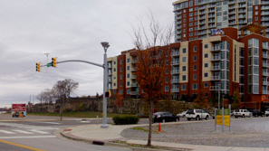

Object Movie

Directional Sprite
{ speed: 1,
opening: 1,
frame: 3,
delay: 3,
directional: true }
/*
`speed` 1 is one revolution
per second (1 Hz). It is animated
after 1 second long `opening` spin
and a 3 second `delay`.
*/

Clockwise Sprite
{ speed: -0.3,
frames: 35,
cw: true }
/*
Unlike the other formula car sample
this one's sprite is clockwise-
-organized.
*/

Non-Animated Sprite
{ frames: 35,
opening: 2,
entry: 1 }
/*
This one isn't fully animated,
but has a 2 seconds long `opening`
with `entry` speed of 1 Hz.
*/

Multi-Row Sprite
{ speed: 0.3,
frames: 6,
footage: 3,
rows: 3,
row: 2 }
/*
Additionally custom class "bordered"
(the dashed border) is applied
on the IMG and is being preserved.
*/

Multi-Row Sequence
{ frames: 20,
frame: 14,
rows: 6,
row: 3,
speed: 0.3,
path: 'samples/mini/',
images: mini_frames() }
/*
Helper function `mini_frames` returns
simply an array of filenames
[ '001.jpg',
'002.jpg',
..
'120.jpg' ]
*/

Dual-Orbit Sequence
{ footage: 10,
cw: true,
orbital: 3,
inversed: true,
speed: 0.7,
path: 'samples/phone/',
images: phone_frames(20) }
/*
Helper function `phone_frames` returns
simply an array of filenames
[ '01.png',
'02.png',
..
'19.png' ]
*/

Sequence
{ speed: 2,
delay: 1,
path: 'samples/',
images: [ 'badge-1.gif',
'badge-2.gif',
'badge-3.gif',
'badge-4.gif' ] }
/*
`delay` tells it to wait 1 second
before starting to play
*/

Sequence
{ cw: true,
frame: 32,
speed: -0.2,
path: 'samples/drone/',
images: drone_frames() }
/*
Helper function `drone_frames` returns
simply an array of filenames
[ '00001.png',
'00006.png',
'00011.png',
..
'00179.png' ]
*/
Panorama Movie

Stitched
{ frames: 32,
footage: 4,
speed: 0.1 }
Rectilinear Panorama

Click-Free Stitched
{ stitched: 1821,
frames: 60,
frame: 23,
speed: -0.05,
clickfree: true }

Non-Looping Stitched
{ stitched: 1072,
loops: false,
steps: 30,
step: 15,
speed: -0.1,
timeout: 1 }